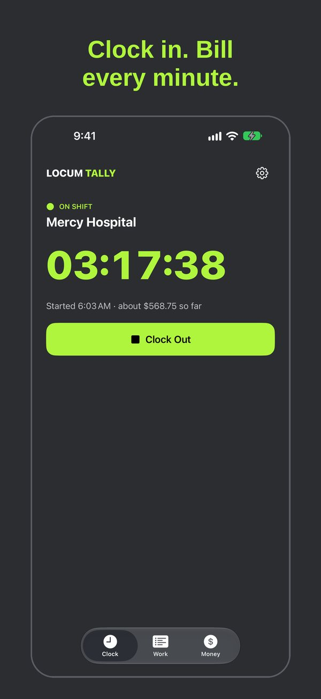
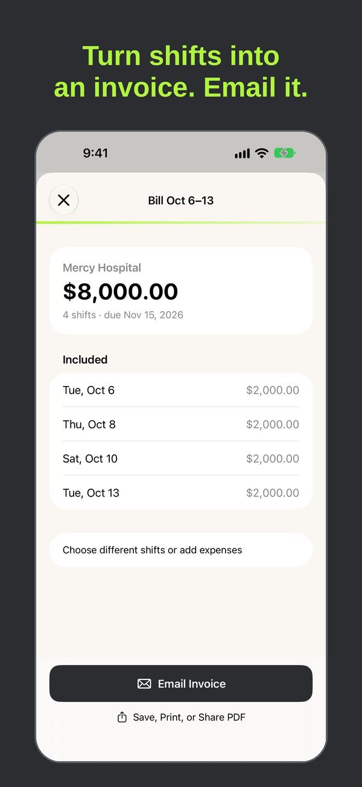
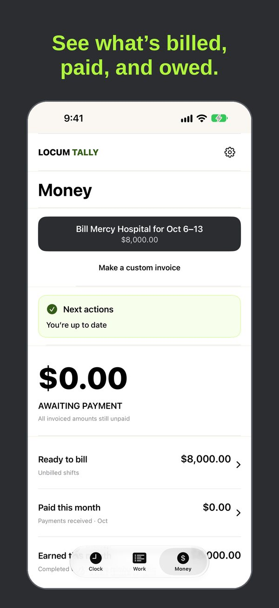

For 1099 locum providers
Clock in. Bill the facility. Get paid.
Locum Tally is an iPhone time clock and invoice app for independent locum physicians, CRNAs, nurse practitioners and PAs.
Your records stay on your iPhone and in your own private iCloud. There's no account and no tracking.
Free to start · iPhoneWhat it does
- One-tap time clock. Clock in and out, with a Live Activity, widgets and Siri shortcuts. Add a shift by hand if you forget.
- Facility rates. Set hourly, daily, overtime, call and callback pay for each facility.
- Invoices in a minute. Choose the shifts, add expenses and receipts, then share a PDF invoice packet.
- Know who owes you. Record full or partial payments and see what's still outstanding.
- Income reports. Monthly, yearly and custom ranges as a PDF, plus CSV and QuickBooks exports with Pro.
- Private iCloud sync. Keep your own iPhones up to date. Sync is free.
Screenshots



Free and Pro
Free
$0
- Time clock, widgets and Live Activity
- 1 active facility
- 1 invoice a month
- PDF income report
- iCloud sync and backups
Locum Tally Pro
$9.99/month
or $79.99/year
- Unlimited facilities and invoices
- QuickBooks and CSV exports
- Receipt scanning with the camera
- 2-week free trial, then renews automatically. Cancel anytime in your Apple Account settings.
US prices. Your price is shown in the App Store before you buy. See the Terms of Use.
Questions?
Read the support page or email aaron.lewis15@gmail.com.
Locum Tally is a record-keeping tool. It isn't tax, legal or accounting advice. Never enter patient information.